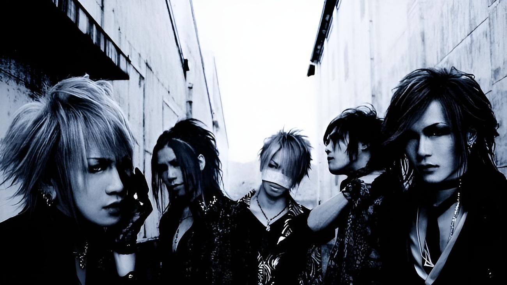

Uma banda japonesa formada em 2002, reconhecida como um dos nomes mais influentes do visual kei moderno. Seu som combina elementos de metal, rock alternativo e industrial, criando uma identidade intensa e marcante. Além da música, o grupo se destaca pela estética visual forte e conceitual.
Desde o início dos anos 2000, a banda construiu uma trajetória sólida dentro e fora do Japão. Com o lançamento de seus primeiros trabalhos, rapidamente conquistaram espaço na cena visual kei.
A formação da banda permanece estável há anos, o que contribui para a consistência de seu estilo:
vocalista, conhecido por sua presença intensa e versatilidade vocal
guitarrista, com destaque para melodias marcantes
guitarrista, responsável por bases e harmonias
baixista, reconhecido pelo visual icônico, faleceu, dia 15 de abril de 2024, aos 42 anos. Não foi divulgado o motivo da morte
baterista e líder, essencial na estrutura musical da banda
O estilo da banda é marcado por contrastes: peso e melodia, agressividade e sensibilidade. As letras frequentemente abordam temas emocionais, existenciais e sociais, enquanto o visual reforça uma estética obscura, teatral e altamente expressiva.
outras bandas conhecidas no cenario Visual kei são: Buck-Tick, Malice Mizer, SHAZNA, Dir en Grey e Plastic Tree
O visual kei também foi um grande movimento na história japonesa, sendo consolidado, como marco de rebeldia e ir contra os padrões sociais da época.
